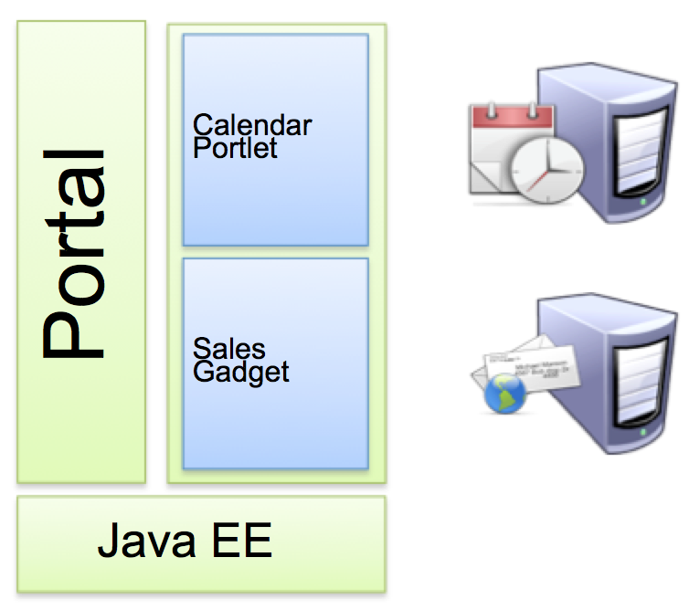
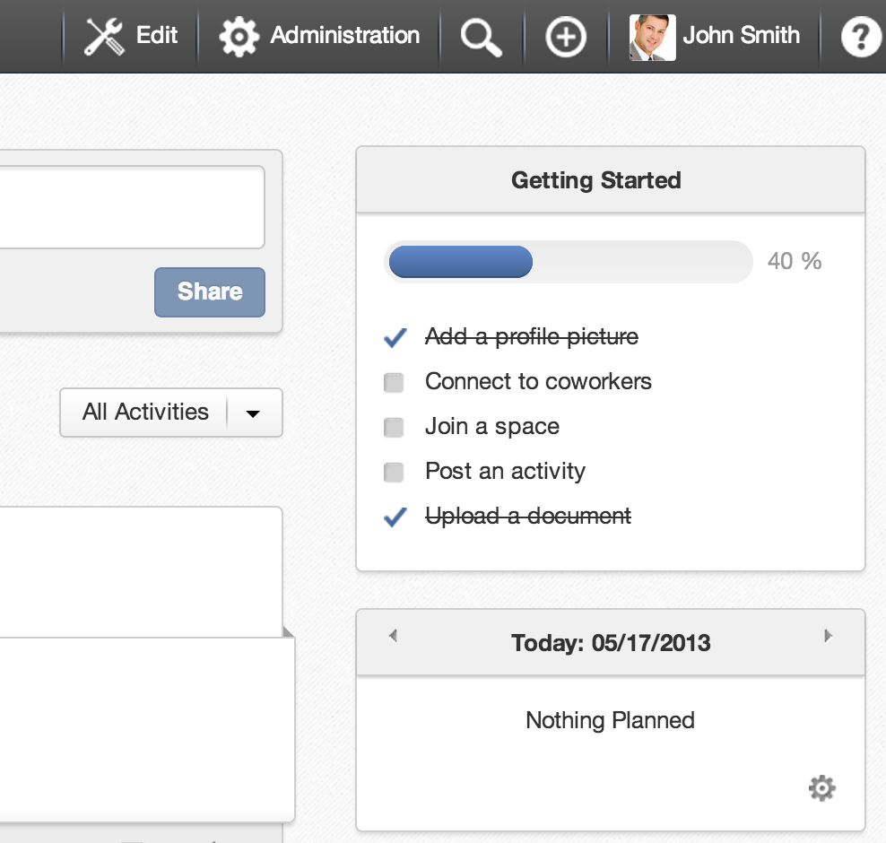
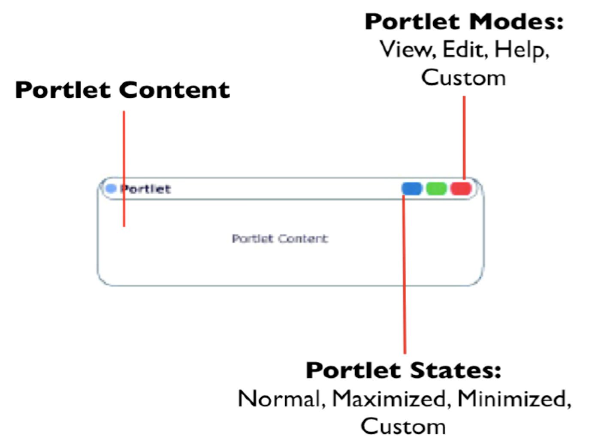
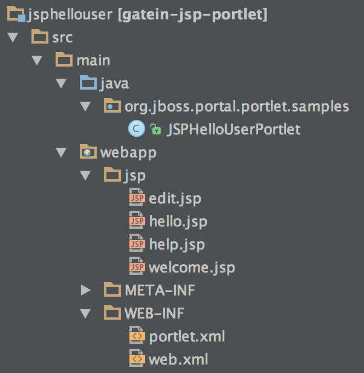
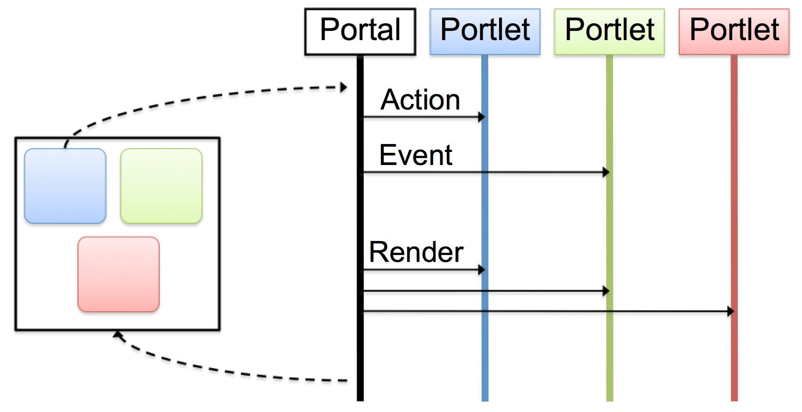
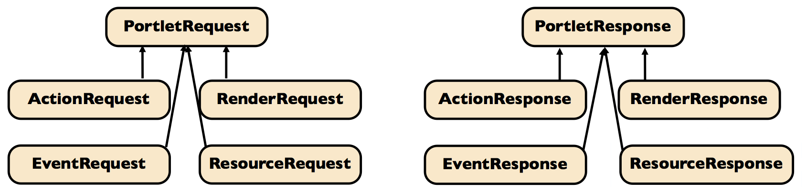
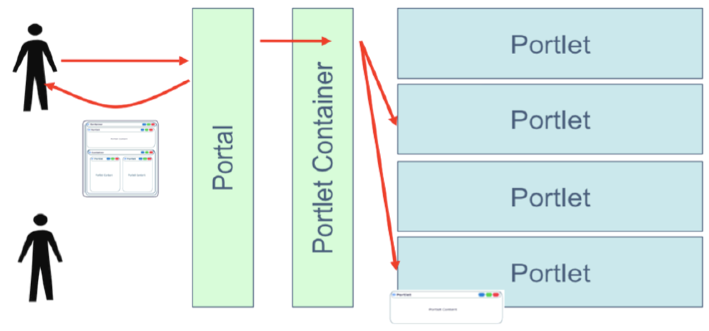
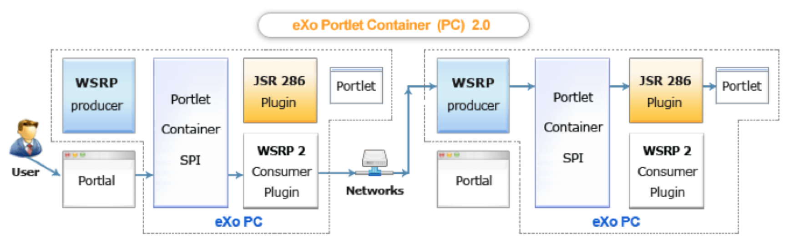
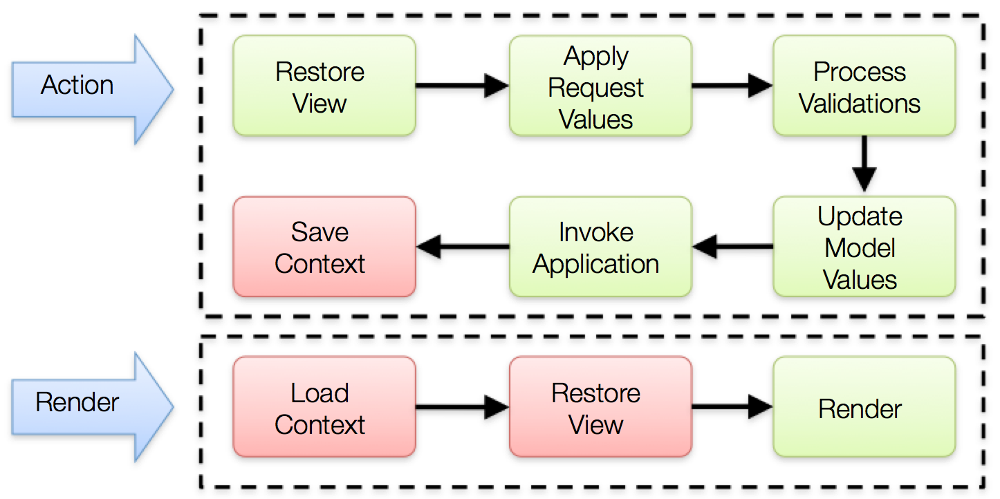

Portlet
How to develop with bridges?
eXo Platform Academy
May 2013
Agenda
- Concepts
- MVC Phases
- Portlet versus Gadget
- Architecture
- JSP Code Snippets
- Portlet Preferences
- Simplest Hello World
- Portlet Bridges
Concepts
Portlets
- Enterprise portals aggregate your applications, contents and services


Definition : JSR-286
- Portlet : A portlet is an application that provides a specific piece of content (information or service) to be included as part of a portal page.
- Portlet Container : A portlet container contains portlets and manages their lifecycle.
Concepts

Portlets
- Portlets are server components
- Similar to servlets
- Designed for aggregation and personalization
- Portlet 2.0 standard
- Designed to integrate with the Java EE ecosystem but not part of it
Portlets
- JSR 168 et JSR 286
- Based on a Web Container (Servlets/JSP)
- Extends the class
javax.portlet.GenericPortlet - Configuration:
./WEB-INF/portlet.xml

MVC Phases
Model - View - Controller
The MVC Paradigm
- Portlets interactions are divided into three phases:
- action phase updates state and acts as controller
- event (Portlet 2.0+) phase coordinates portlets, it is an extension of the action phase to other portlets on the same page
- render phase retrieves markup to update the view
Portlet Lifecycle
init()- Initialization of the portlet
processAction()- Valid the form and commit changes in the database
processEvent()- Event management
render()- Render the content of the portlet and read in the database
destroy()- Destroy the portlet
Portal Http GET
- Renders a portal page
- The render phase reads the state and create markup
Portal Http POST
- Triggered by a portlet to trigger the execution of its action phase
- The action updates the state
- Database
- Session
- Preferences
- Parameter
- The optional event phase signals other portlet that something happened
- Finally page rendering occurs again
- The action updates the state
Phase Sequence

Portlet vs Gadget vs Servlet
Gadgets
- Gadgets are browser components
- An embeddable chunk of Javascript using web standards
- Many implementations, many names: widgets, badge, module, webjit, capsule, snippet, ...
- eXo uses the de facto standard “Google Gadget”
Portlets vs Gadgets
| Portlet | Gadget |
|---|---|
| Portlets use the javax.portlet interfaces and classes | Google Gadget API |
| Requires a build (compile/package/deploy) | No development process required |
| Supports Browser Back Button (BBB) | No support for BBB |
| Supports bookmarkability | No support for bookmarkability |
Portlets vs Gadgets
| Portlet | Gadget |
|---|---|
| Request/response server interactions | Live user interface |
| State is shared between the portal and the portlet container | State is shared between the browser DOM and the portal No development process required |
| Use container services (Database, EJB, ESB) | Use Programmable Web, usually REST Web Services |
| Standardized coordination | De facto standard by Google |
Portlet vs Servlet
- Portlet Extras
- Decorations
- Portlet mode: view, edit, help, admin
- Window state: minimized, normal, maximized
- Personalization
- Specified support for internationalization
- Categorization
- Decorations
Portlet / Servlet similarities
| Portlet | Servlet |
|---|---|
PortletRequest |
ServletRequest |
PortletResponse |
ServletResponse |
PortletSession |
ServletSession |
PortletContext |
ServletContext |
PortletFilter |
ServletFilter |
PortletRequestDispatcher |
RequestDispatcher |
Architecture
Request/Response Objects
- Each phase defines his own objects
- Similar to the Servlet API

Architecture

Portlet Application Packaging
- Portlets are packaged in a war file and the portlet container discovers them
- The
portlet.xmldeployment descriptor configures and describes the portlets
Configuration
HelloWorld Portlet
HelloWorld
Hello World Portlet
org.exoplatform.demo.HelloWorldPortlet
0
text/html
help
edit
en
fr
HelloWorld
Hello
JSP Code Snippets
PortletRequestDispatcher
- Delegate rendering to a jsp page
private static final String VIEW_PAGE = "/WEB-INF/jsp/view.jsp";
public void doView(RenderRequest pRequest, RenderResponse pResponse)
throws PortletException, IOException
{
pResponse.setContentType("text/html");
PortletContext context = getPortletContext();
portletRequestDispatcher rd = context.getRequestDispatcher(VIEW_PAGE);
rd.include(pRequest, pResponse);
}
Portlets URL
- Portlets URL are managed by the portal
- The PortletURL object is available during rendering phase and allows to create an URL to the action phase or rendering phase of the portlet
...
PortletURL renderURL = response.createRenderURL();
renderURL.setParameter("a", "b");
renderURL.setPortletMode(PortletMode.EDIT”);
renderURL.setWindowState(WindowState.MAXIMIZED);
String url = portletURL.toString();
PortletURL actionURL = response.createActionURL();
...
Portlet Taglib for JSP
...
<%@taglib uri="http://java.sun.com/portlet_2_0" prefix="portlet"%>
<!-- Mandatory !!! -->
<portlet:defineObjects /> <br/>
...
<!-- une autre manière de créer des URLs -->
<portlet:renderURL var="renderURL"/> <br/>
Render Link: <a href="<%=renderURL %>"
...
WindowState and PortletMode <br/>
<%= renderRequest.getWindowState().toString()%> <br/>
<%= renderRequest.getPortletMode().toString()%> <br/>
Portlet Preferences
Portlet Preferences
- Classes and methods to manage personalization of portlets
- Generally used in the "edit" mode
- Preferences can be editable (action) or read only (render)
Portlet Preferences
message
Message par defaut
false
...
PortletPreferences prefs = actionRequest.getPreferences();
prefs.setValue("message", "Nouveau Message");
prefs.store();
...
...
String message = prefs.getValue("message", "");
...
Save Preferences
- InputForm
...
<portlet:actionURL var="action"/>
<form action="<%=action %>" method="post">
<label for="messageinput">Message:</label>
<input type="text" name="message" id="messageinput" value="<%= message %>"/>
<input type="submit" label="Save" />
</form>
...
- ProcessAction() call
...
if (request.getPortletMode().equals(PortletMode.EDIT) ) {
String message = request.getParameter("message");
PortletPreferences prefs = request.getPreferences();
prefs.setValue("message", message);
prefs.store();
response.setPortletMode(PortletMode.VIEW);
}
Simple Portlet Example
Simple Hello World : package
- SimpleHelloWorld-0.0.1.war
Simple Hello World
|-- SimplestHelloWorld-0.0.1.war
| `-- WEB-INF
| |-- classes
| | `-- org
| | `-- gatein
| | `-- portal
| | `-- examples
| | `-- portlets
| | `-- SimplestHelloWorldPortlet.class
| |-- portlet.xml
| `-- web.xml
Portlet Example - Portlet Class
package org.jboss.portal.portlet.samples;
import javax.portlet.GenericPortlet;
import javax.portlet.PortletException;
import javax.portlet.RenderRequest;
import javax.portlet.RenderResponse;
import java.io.IOException;
import java.io.PrintWriter;
public class JSPHelloUserPortlet extends GenericPortlet
{
public void doView(RenderRequest request, RenderResponse response) throws PortletException, IOException
{
PrintWriter writer = response.getWriter();
writer.write("Hello World");
writer.close();
}
}
Portlet Example - portlet.xml
<?xml version="1.0" encoding="UTF-8"?>
<portlet-app xmlns="http://java.sun.com/xml/ns/portlet/portlet-app_2_0.xsd" version="2.0"
xmlns:xsi="http://www.w3.org/2001/XMLSchema-instance"
xsi:schemaLocation="http://java.sun.com/xml/ns/portlet/portlet-app_2_0.xsd
http://java.sun.com/xml/ns/portlet/portlet-app_2_0.xsd">
<portlet>
<portlet-name>JSPHelloUserPortlet</portlet-name>
<portlet-class>org.jboss.portal.portlet.samples.JSPHelloUserPortlet</portlet-class>
<portlet-info>
<title>JSP Hello User Portlet</title>
</portlet-info>
</portlet>
</portlet-app>
Exercises - Simple Portlets
- Simple Portlets
- There are four examples of portlet bridges
- Analyse, build and test these examples
- Simple hello world (java only) (Add doEdit() method and "edit" in the portlet.xml file)
- JSP: hello user (all phases)
- Extra: Take the JSP example, modify it depending on your experience: modify the rendering jsp files, access to eXo services, add a form and react to different parameters
Extra Exercise – Portlet 2.0
- Push by RenderReponse:
- In Portlet 2.0 you can modify any element of the response from any portlet.
- Therefore you use the RenderResponse object.
- An example of a RenderResponse is in a portlet’s form code that adds a javascript to header of the page:
RenderResponse response = context.getResponse(); Element elementS = response.createElement("script"); elementS.setAttribute("type", "text/javascript"); elementS.setAttribute("src", "/eXoWCMResources/javascript/eXo/wcm/backoffice/public/Components.js"); response.addProperty(MimeResponse.MARKUP_HEAD_ELEMENT,elementS); - Exercise: Create a portlet that adds a favicon to the current page, access the favicon by a rest service. Or alternatively add Google Analytics.
- Favicon hint:
- <link rel="shortcut icon" href=“/portal-rest-path/name_of_icon.ico"> or add a meta data (for search engines)
WSRP
Web Services for Remote Portlets
WSRP : Remote Portlets

Portlet Bridges
Portlet Bridges
- Bridges are portlet implementations which adapt web framework to the portlet world and allows you to execute native applications
- JSF Portlet Bridge / JSR 301
- Struts 1 bridge deprecrated
- Struts 2 portlet
- SpringMVC portlet
- Grails portlet
- Tapestry portlet
The web framework reality check
- Gives you productivity
- You should not develop an application with the Portlet API
- low level
- not productive
Web Frameworks for Portals
- The Portlet Bridge
- An adapter for a web framework to the portlet container runtime
- Works ideally with framework that does not expose the servlet container
- Limited support for the full portlet API
- The Portlet Framework
- The web framework approach to the portlet world
- Leverage your knowledge of a framework
- The full portlet API can be leveraged
Portlet Bridges
- Modern web frameworks have an abstraction (SPI) over the servlet API
- The bridge implements the SPI by delegating to portlet container
- Legacy web frameworks relies on the servlet API
- The bridge executes the target framework in its servlet container context
JSF Portlet Bridge Specification
- Portlet Bridge Specification for JavaServer Faces (JSR 301)
- The main goal is to define how a JSF application executes in a portlet environment
- Additionally it specifies how advanced portlet features can be used
- Split into two specifications
- Portlet 1.0 Bridge Specification for JavaServer Faces 1.2
- Portlet 2.0 Bridge Specification for JavaServer Faces 1.2
- At least three open source implementations
- Apache MyFaces Portlet (RI)
- JBoss PortletBridge
- OpenPortal JSF PortletBridge
JSF Bridge Lifecycle

JSF Bridge Features
- Clean room specification
- Maintain action request attributes
- Handle identifier namespacing
- Handle redirects during the render phase
- Supports portlet mode changes
- Manage a view per mode
- Navigation between modes
/edit.jspx?javax.portlet.faces.PortletMode=edit#{sessionScope['javax.portlet.faces.viewIdHistory.view']}
JBoss Portlet Bridges
- JBoss Portlet Bridge
- Implementation of the JSR-329 specification which supports the JSF 1.2 runtime within a JSR 286 portlet
- Supports JSF, Seam and RichFaces
- The developer no longer needs to worry about the underlying portlet development, portlet concepts, or the API.
JBoss Portlet Bridges
- Understanding how JSF works with Portal
- The portlet bridge isn't a portlet. It's the mediator between the two environments and allows JSF and Portal to be completely unaware of each other.
- The bridge is used to execute Faces requests on behalf of the portlet.
- During each request, the Faces environment is setup and handled by the bridge.
- Part of this implementation acts as a Faces controller much as the FacesServlet does in the direct client request world.
Exercise : JBoss Portlet Bridges
- Portlet Bridges
- There are 3 examples of portlet bridges
- JSF - simple hello user (exercises/jsfhellouser)
- JSF - JSF 2 + RichFaces 4 (exercises/jsf2rf4)
- Struts - jpetstore (exercises/struts-jpetstore)
- Analyse, build and test these examples
- Extra: Customize the JSF examples
Portlets
Questions and Answers
Copyright 2013 eXo Platform